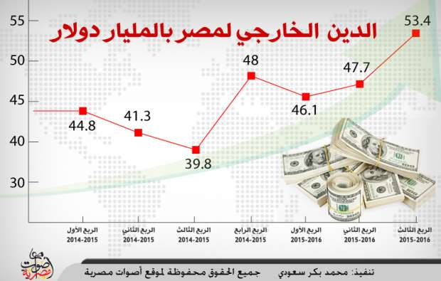

أحدث الأخبار
- القضاء الإداري يقضي بحل اتحاد الكرة وبطلان الانتخابات الأخيرة
- مقتل 3 أشخاص وإصابة 3 آخرين في حادث مروري بالبحيرة
- وزير الخارجية يجري اتصالاً مع رئيس المجلس الرئاسي الليبي
- عاصمة مصر تتجه لزيادة سكانية نصف مليون العام الجاري
- باولو يقود هجوم الزمالك أمام رينجرز في دوري الأبطال
- المالية تعفي المطاعم غير السياحية من ضريبة القيمة المضافة بشروط
- "القضاء الإداري" يلزم الجامعة الأمريكية بتحصيل مصروفاتها بالجنيه المصري
- البورصة ترتفع بنسبة 0.52% في نهاية التعاملات
هل تنجح أموال صندوق النقد في إصلاح الاقتصاد أم تلقى مصير مساعدات الخليج؟
* بنوك استثمار: اقتربت ساعة الصفر لخفض الجنيه
* بلتون: تراجع الدولار في السوق السوداء إلى 12.6 جنيه
* عمرو عدلي: التوسع غير المسبوق في الاستدانة يثير مخاوف الدخول في "دوامة الديون"
في الوقت الذي اعتبر فيه اقتصاديون لجوء الحكومة للاقتراض من صندوق النقد الدولي، فرصة أخيرة لإصلاح الاقتصاد، أبدوا تخوفا من تفاقم الديون الخارجية على مصر.
كما حذروا من أن تلقى أموال الصندوق نفس مصير المساعدات الخليجية، إذا لم تلتزم الحكومة بتطبيق برنامج إصلاحي شامل يضمن حل مشكلات القطاعات الاقتصادية المولدة للعملة الصعبة وعلى رأسها السياحة والاستثمار الأجنبي.
وأعلنت الحكومة أمس الثلاثاء، عن اقترابها من إتمام مفاوضات مع صندوق النقد الدولي للحصول على قرض سيسهم في تخفيف حدة أزمة النقد الأجنبي المهيمنة على البلاد.
وقال عمرو الجارحي وزير المالية أمس، إن مصر تتفاوض للحصول على قرض بقيمة 12 مليار دولار بواقع 4 مليارت سنويا، وذلك ضمن برنامج يستهدف جذب تمويلات بقيمة 21 مليار دولار خلال 3 سنوات.
وقال صندوق النقد الدولي، في بيان أمس، إن بعثة ستزور القاهرة يوم السبت المقبل لبدء مناقشات البرنامج التمويلي الذي تقدمت مصر بطلبه رسميا، على أن يتم الإعلان عن نتائج هذه المناقشات في منتصف شهر أغسطس المقبل.
واعتبر بنك استثمار برايم، في مذكرة بحثية اليوم الأربعاء، أنه "لا حل لأزمة نقص العملة الأجنبية إلا عن طريق الحصول على مساعدات مالية خارجية وبالأخص من صندوق النقد الدولي".
وتعاني مصر نقصا حادا في مواردها من العملة الصعبة وسط تراجع إيرادات السياحة وقناة السويس وتحويلات المصريين في الخارج والاستثمارات الأجنبية المباشرة.
وقالت ريهام الدسوقي، كبيرة محللي الاقتصاد في بنك استثمار أرقام كابيتال الإماراتي، إن "المبالغ التي ستحصل عليها مصر من صندوق النقد الدولي وغيره من المؤسسات ستساعدها على عبور الأزمة الحالية في الأجل القصير، حتى تتعافى المصادر الاقتصادية الطبيعية لتوليد العملة الصعبة".
وأضافت أن "التوقيع مع الصندوق لا يعني لمصر الحصول على أموال فقط، وإنما يعني أن مصر تتعهد بشكل رسمي بالالتزام بتطبيق خطة الإصلاح الاقتصادي، وهي خطة انتظرها المستثمرون الأجانب طويلا، وستشجعهم على العودة للعمل في مصر".
ريهام الدسوقي: الاتفاق مع صندوق النقد يعيد الثقة للمستثمرين الأجانب
وفي هذا السياق يحذر بنك برايم من أن تتقاعس الحكومة عن تنفيذ خطة الاصلاح الاقتصادي التي ستتفق عليها مع الصندوق، حيث يقول إن الحصول على تمويل الصندوق "يتطلب مجهود أكبر بوتيرة أسرع لتطبيق برنامج إصلاحي اقتصادي شامل .. بغير ذلك، فإن الدعم الخارجي وما يتبعه من تخفيض متوقع للعملة سوف يعتبران مجرد حزمة إنقاذ للآجل القصير فقط".
وكانت مصر حصلت من الخليج على مساعدات بقيمة 25 مليار دولار خلال الأربعة سنوات الماضية بحسب وكالة ستاندرد أند بورز للتصنيف الائتماني، لكن هذه التمويلات لم تنجح في كبح أزمة النقد الأجنبي التي تفاقمت مع تراجع الاحتياطي إلى مستويات تغطي بالكاد ثلاثة أشهر من الواردات في الوقت الحالي.
مخاوف من الدخول في دوامة "الديون"
وبجانب المخاوف من مدى قدرة مصر على تطبيق برنامجا اصلاحيا تحت مظلة صندوق النقد يضمن معالجة أزمتها المالية بشكل جذري، يبدي خبراء مثل عمرو عادلي، الباحث بمركز كارنيجي، قلقا كبيرا من اعتماد البلاد المتزايد على الاستدانة الخارجية.
حيث يقول عدلي إنه مع اقرار مصر لحزمة التمويلات التي أعلنتها أخيرا بقيمة 21 مليار دولار، ستشهد البلاد توسعا " غير مسبوق" في الاستدانة الخارجية منذ حقبة التسعينات.
"عندي تخوف كبير من الأرقام المعلنة، 7 مليار دولار سنويا لمدة 3 سنوات، هذا رقم كبير جدا، هذا بخلاف القروض الأخرى التي وقعتها مصر وأخرها القرض الروسي لتمويل المحطة النووية بقيمة 25 مليار دولار"كما يقول الخبير في كارنيجي.
وقفز الدين الخارجي لمصر بنسبة 34.1% في الربع الثالث من العام المالي الماضي الذي انتهى في يوم 31 مار س 2016، ليصل إلى نحو 53.4 مليار دولار، مقابل نحو 39.9 مليار دولار في نفس الفترة من العام المالي السابق.

وأضاف عدلي أنه "في مارس الماضي كانت الحكومة تتحدث عن جذب الاستثمارات الأجنبية وأقامت مؤتمر شرم الشيخ لهذا الهدف، لكن ما يحدث حاليا هو محاولة لحل الأزمة في المدى القصير، من خلال الاقتراض بدلا من جذب الاستثمارات".
وأشار عدلي إلى أن "هذا النمط من التفكير يدخل البلاد في دوامة من الاقتراض المستمر حتى لا تفلس، وهو نموذج أشبه بما يحدث في اليونان".
"قد لا نشعر حاليا بخطورة هذه الديون، لكن عندما يحل وقت سدادها والفوائد المترتبة عليها، ستكون هناك أزمة، خاصة أن القطاعات الاقتصادية المصرية لا يمكنها توليد كل الدولارات اللازمة لسداد هذه الديون"، تبعا لعدلي.
لكن ريهام الدسوقي اعتبرت أن "التوقيع مع صندوق النقد يضمن أن الحكومة ستنفذ كل الإصلاحات المتفق عليها في البرنامج، وهو ما يجعل هذا الاتفاق مختلفا عن اتفاقات التمويل التي حصلت عليها في السنوات الماضية من الخليج".
خفض الجنيه..اقتربت ساعة الصفر
ويتوقع المحللون أن يكون تعويما جديدا للعملة المحلية من أبرز الاجراءات المصاحبة لاتفاق مصر مع الصندوق، وعلق بنك الاستثمار بلتون في مذكرة بحثية اليوم على اقتراب خطوة التعويم بقوله "اقترب اليوم الموعود وحانت ساعة الصفر".
وقالت بلتون "نرى أن اتخاذ إجراء قبل وصول بعثة صندوق النقد بـ 48 ساعة ستكون بادرة جيدة جدًا لإتمام مباحثات قرض النقد الدولي بنجاح وتأمين الحصول عليه قبل نهاية العام"
وقال بنك استثمار برايم إنه قبل الإعلان عن الاقتراض من الصندوق كان "من غير المجدي تعويم الجنيه لما يتضمنه من خسائر وتكاليف -في صورة تصاعد معدلات التضخم- أكثر من منافعه"، لكن بعد الحصول على هذه المساعدات "نتوقع تخفيض الجنيه في القريب العاجل".
"كل الظروف المحلية والعالمية في صالح البنك المركزي لاتخاذ قرار التعويم الكامل والفوري في سعر صرف الجنيه" يقول هاني جنينة، مدير قطاع الأسهم في بلتون، متوقعا قرار وشيكا خلال أسبوعين على أقصى تقدير.
جنينة: صندوق النقد لن يتهاون في شرط "تعويم الجنيه"
وأوضح جنينة أنه يتحدث عن تعويم كامل وليس مجرد خفض تدريجي.
"لا تراجع عن التعويم، صندوق النقد لن يتهاون في هذا الشرط، غير مقبول بالنسبة للصندوق أن تحصل على دولارات لتصرفها في الدفاع عن سعر وهمي للجنيه" تبعا لجنينة.
لكن في المقابل تري ريهام الدسوقي، ورامي عرابي، محلل الاقتصاد الكلي في شركة مباشر لتداول الأوراق المالية، أن خفض الجنيه بشكل تدريجي هو السيناريو الأقرب حتى لا تحدث قفزة كبيرة في الأسعار تعقبها مشكلات اجتماعية وسياسية.
وقالت مذكرة لبنك استثمار بلتون فاينانشيال صدرت اليوم الأربعاء، إنه فور الإعلان عن المفاوضات على قرض صندوق النقد الدولي، تراجع سعر الدولار في السوق السوداء إلى 12.6 جنيه للدولار، بعدما قفز فوق 13 جنيها في أخر يومين.
وتوقع بلتون أن يبيع حائزوا الدولار ما اشتروه بهدف المتاجرة والمضاربة بنفس القوة التي اشتروا بها ترقبا لانخفاض محتمل في سعره، خاصة إذا اتخذ البنك المركزي قرارا غدا بزيادة أسعار الفائدة في اجتماع لجنة السياسات النقدية.
وسجل الدولار مستويات غير مسبوقة من الارتفاع في السوق الموازية خلال اليومين الماضيين ووصل إلى 13.10 جنيه في بعض الصفقات، وسط توقعات بخفض وشيك في سعر العملة المحلية، بعد تصريحات أدلى بها محافظ البنك المركزي قال فيها إن "سياسة الحفاظ على سعر الجنيه كانت خطأ فادحا".
وأثنى جنينة على ما وصفه بـ "نجاح" محافظ البنك المركزي في إحداث حالة من الإرباك في السوق حتى يعرف "أخر السوق السوداء فين" وأنه قادر على السيطرة عليها.
بلتون: السعر العادل للدولار يتراوح بين 11 و12 جنيها
وأضافت مذكرة بلتون أن السعر العادل للدولار حاليا يتراوح بين 11 و12 جنيها، وأنه قد يقترب من 10 جنيهات إذا دخلت تدفقات كبيرة بالعملة الصعبة خلال الفترة المقبلة.
وتوقعت ريهام الدسوقي أن يتراوح سعر الدولار بعد تخفيض الجنيه بين 10 و11 جنيها في السوق الرسمي، بينما توقع عرابي أن يتراوح 9.6 و 10.2 جنيه.
وكان محافظ البنك المركزي السابق، هشام رامز، قد بدأ في تطبيق سياسة للتخفيض المتدرج للجنيه مقابل الدولار، منذ نهاية 2012، وذلك بتحديد سعر العملة الأمريكية من خلال طرحها في مزادات للبنوك، لكن السوق السوداء كانت ترفع سعر الدولار بأكثر من الزيادات التي كان يمررها المركزي للسوق الرسمي.
وبعد تولي عامر رئاسة المركزي ببضعة شهور سمح بخفض قوي للجنيه، حيث خفض يوم 14 مارس الماضي سعر صرف العملة المحلية إلى 8.85 جنيه للدولار من 7.73 جنيه، لكنه عاد ورفعه 7 قروش في عطاء استثنائي يوم 16 مارس، ليستقر عند 8.78 جنيه للدولار.
الاخبار المتعلقة


{kind=link}
تعليقات الفيسبوك